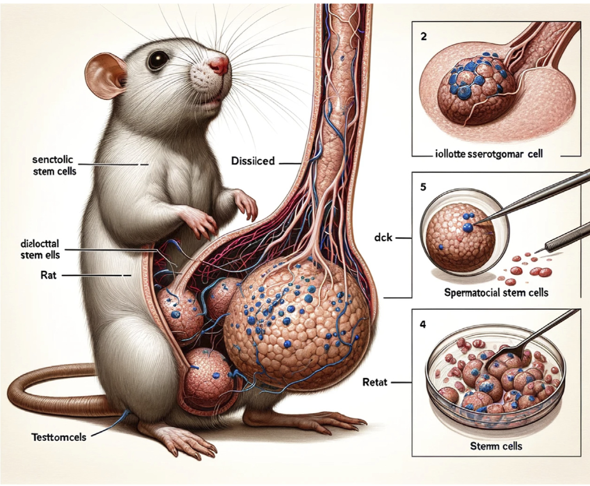
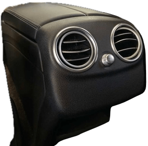
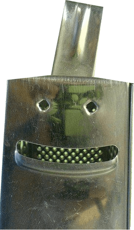
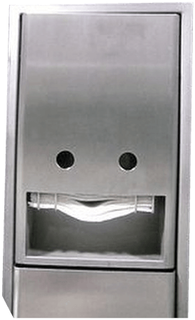
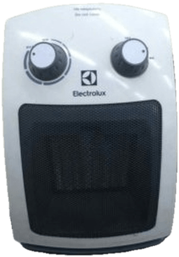

Laura Summers | EuroPython 2026
Pydantic is hiring
Based on a blog
The Human-in-the-Loop Is Tired
Section 1
something to see here
or, we're all markdown engineers now


the vibes are weird
The dust hasn't settled on how we'll use this stuff at work — where we just optimise and automate, and where we rethink the whole job. But the rate of improvement is so high, and not slowing, that sitting on your hands isn't a defensible stance. — Alan Nichol
linkedin.com/posts/anichol_audience-slido-questions-ugcPost-7467886985756725248
Slop or not?
Hands up / hands down.

Slop or not? (A)
from pydantic import BaseModel
class Talk(BaseModel):
title: str
speaker: str
track: str = "EuroPython 2026"
talk = Talk(
title="The Human-in-the-Loop Is Tired",
speaker="Laura Summers",
)
Slop or not? (B)
def add_message(content, history=[]):
history.append({"role": "user", "content": content})
return history
We're all evaluators now
Taste all the way down
The paperclip maximiser
Breaking connections
- communication ↔ meaning
- appearance of effort ↔ experience of it
- gloss of clarity ↔ actually understanding it
Why do you deserve so much?
Why are you so rich?
Will Manidis, "On Grindslop": x.com/WillManidis/status/2057094527236665598
Because I suffer. Because I do not sleep. Because I've given up my life to something greater than myself because my employees have scarred their flesh with my symbol and I eat from open containers the leftover food and my body rots, as I sit at the desk, because I have not left this building in 11 days because I am no more of the lines of code that I produce than I am flesh and life.
Will Manidis, "On Grindslop": x.com/WillManidis/status/2057094527236665598
Section 2
Diagnosis
what it actually feels like




Cognitive dissonance
the sell ↔ the reality
Skinner boxes
variable rewards, illusion of control
B. F. Skinner, operant conditioning chamber (1930s) — en.wikipedia.org/wiki/Operant_conditioning_chamber
I simultaneously became snappier towards those who were asking me impromptu questions… and more rant-y towards those who were asking me how I was doing. — Eric Ma
ericmjl.github.io/blog/2026/5/2/how-i-recognized-and-handled-ai-burnout
Pareidolia
we're wired to see faces — even where there are none



The perpetual Turing test
existential angst
times are weird, and only getting weirder


Dr. Kristian Rother & Silvia Hänig — Workshop: "What do we still need to learn?"
friction is the thing that builds the understanding of the system in your head. — Mario Zechner
Response time isn't one number
the number on the box vs the loop you live in
| TTFT time to first token |
What vendors quote. Fast models: under 1 second. |
| E2EL end-to-end |
The time until you can actually act again. Depends on your prompt, your output length, and any thinking — not a number you can look up. |
Artificial Analysis (artificialanalysis.ai), June 2026
The length of the loop
reasoning blows it wide open
| Reasoning mode | inflates the wait 5–30× |
| First useful token | after ~15–70 seconds of hidden thinking |
| Agent chaining calls | the loop is measured in minutes |
digitalapplied.com (Apr 2026), GMI Cloud (May 2026) — June 2026
What's measured
versus what is felt
| TTFT |
|
| E2EL the length of the loop |
what you actually feel |
It's not just the speed
"you're not waiting on a tool — you're waiting on someone who isn't respecting your time"
Why it's not steerable
- slow
- noisy
- missing feedback
Trade-offs made for us
No dial, no readout.
my context wasn't my context… zero observability. — Mario Zechner
The bottleneck was never the code — Remi Louf
Section 3
Remedies & balms
what actually helps




human experience
over model output
Can't pop the hood?
at least measure the exhaust
not the full picture
If you use a hosted model it's a tradeoff
training data, model config, guardrails → invisible
Measuring the system
- observability / tracing
- online & offline evals
Technical balms
- pre-mortems
- AGENTS.md from your review comments
- permission to just write the code
Brain-friendly output
respect your cognitive limit (~4–7 chunks)
Chunk it
- Short paragraphs (2–3 sentences)
- Plain words ("explain it like I'm five")
- HTML header hierarchies (H1, H2…)
- Spacing (e.g.
<br>) - Bullet lists (like this one)
- Caveman-mode replies — no filler (juliusbrussee/caveman)
Aimee Gonzalez-Cameron — "Good Words: Taking Care of Your Brain"
fascinating, thrilling, and exhilarating, but it also left me feeling unmoored and drifting, questioning the permanence of what I was building. — Eric Ma
ericmjl.github.io/blog/2026/5/2/how-i-recognized-and-handled-ai-burnout
Human balms
- pair against the grain
- name it ("oh — you too?")
- solidarity
I find working with Claude more human… I'm having a great time
— Ákos Kádár linkedin.com/in/ákos-kádár-phd-a5363172/
Protect the brain and body
- Breaks every 90 minutes
- talk to a human
- four best hours then stop
- LookAway
Section 4
The bigger picture
what is this doing to us?
Human downgrading
The bottleneck was never the code — Remi Louf
re-building the self
your worth is not your economic output
socializes losses but privatizes gains — Joseph Stiglitz
Freefall: America, Free Markets, and the Sinking of the World Economy (2010) — democracynow.org/2010/2/18/nobel_economist_joseph_stiglitz_on_obamas
Koyaanisqatsi (1982) — youtube.com/watch?v=QI2IlA3ztIo
Hands in the fabric
The human challenge
micro ↔ macro
You're allowed to be tired
More Star Trek, less Black Mirror.
Thanks

Links
Essays & blogs
- The Human-in-the-Loop Is Tired — pydantic.dev
- Alan Nichol — on sitting on your hands
- Will Manidis — On Grindslop
- Eric Ma — Recognising & handling AI burnout
- Aimee Gonzalez-Cameron — Good Words: Taking Care of Your Brain (Pt 1)
- Aimee Gonzalez-Cameron — Good Words: Taking Care of Your Brain (Pt 2)
- Caveman — Claude Code skill for terse replies
- Remi Louf — Thoughts on coding agents
- Joseph Stiglitz — "socializes losses but privatizes gains" (Freefall, 2010)
- Benjamin Ellis — Is AI making us stupid?
- Will Larson (Lethain) — Make no assumptions
- Psychology Today — Is AI making us stupider? (MIT "cognitive debt")
- Ars Technica — AI users surrender their cognition (Wharton, "cognitive surrender")
- Psychology Today — The emerging problem of AI psychosis
- Science Integrity Digest — Frontiers' AI-generated rat paper
- Simon Willison — blog
Talks & videos
- Silicon Valley — Son of Anton
- Simon Willison on Lenny's Podcast
- "Your company's new AI Agent Workflow"
- Jeremy Howard — it feels like a slot machine
- B. F. Skinner — operant conditioning chamber (Wikipedia)
- Dr. Kristian Rother & Silvia Hänig — What do we still need to learn?
- Mario Zechner — Building pi in a World of Slop
- Koyaanisqatsi (1982)